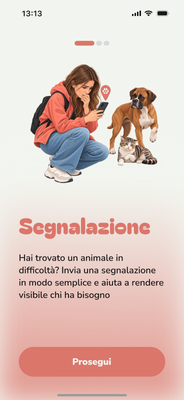
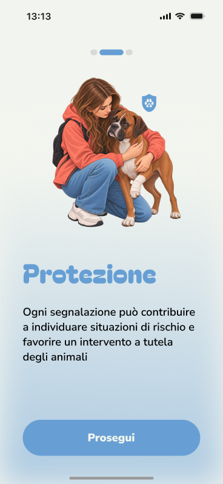
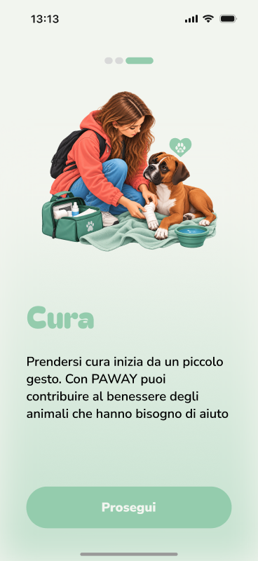
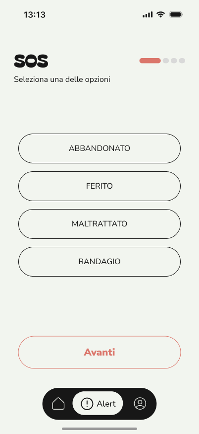
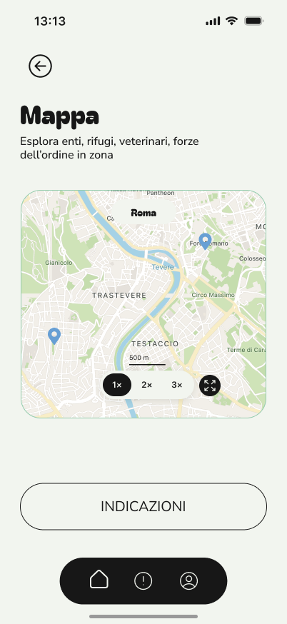
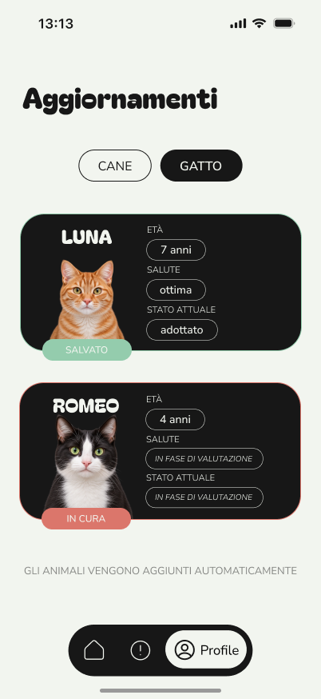
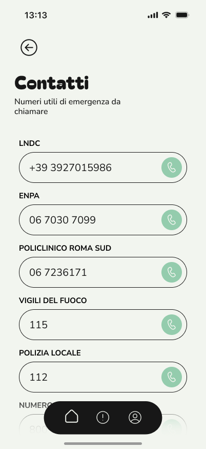

Mappa
Trova veterinari, rifugi, enti e segnalazioni intorno a te.
EsploraPer chi trova un animale in difficoltà
PAWAY è il servizio che rende visibile un animale in difficoltà. Ti dice cosa fare, a chi rivolgerti e come seguire quello che succede dopo.
01 — Segnalazione
Invia una segnalazione in modo semplice e aiuta a rendere visibile chi ha bisogno. Scegli la situazione — abbandonato, ferito, maltrattato o randagio — e l’animale, cane o gatto.

02 — Protezione
Ogni segnalazione può contribuire a individuare situazioni di rischio e favorire un intervento a tutela degli animali.

03 — Cura
Con PAWAY puoi contribuire al benessere degli animali che hanno bisogno di aiuto, e sapere dopo se sono in cura, in valutazione o già al sicuro.

Il percorso
Così sai sempre dove sei. Helpaw è l’assistente che, nell’app, prepara scansione e modulo. Qui sotto puoi provare la struttura, senza inviare nulla.
Abbandonato, ferito, maltrattato o randagio.
Cane o gatto. La guida e gli aggiornamenti seguono questa scelta.
Nell’app, l’assistente AI prepara scansione e anteprima. Tu controlli prima di inviare.
Puoi chiedere una notifica quando cambia lo stato dell’animale.
Anteprima
È la stessa sequenza dell’app: situazione, animale, riepilogo. Non parte una chiamata e non viene salvata nessuna segnalazione.

Seleziona una delle opzioni
Scegli una situazione per continuare.
Quale animale vuoi segnalare?
Scegli cane o gatto per continuare.
Anteprima pronta
— · —
Qui non viene inviato nulla. Nell’app, dopo il riepilogo, puoi chiedere gli aggiornamenti.
Dentro l’app
Mappa
L’app mostra la tua posizione e i punti utili in zona: enti, rifugi, veterinari, forze dell’ordine. Da una scheda leggi tempo e distanza, poi avvii la navigazione.

Guida
Manuale pratico per ogni esigenza. Cerca una situazione o passa da cane a gatto. L’esempio completo, così com’è disegnato nell’app, è quello del gatto abbandonato.
4 indicazioni
Nessuna indicazione con queste parole. Prova con abbandono, ferita, maltrattamento o randagio.
Dopo la segnalazione
Gli animali vengono aggiunti automaticamente. Nell’app trovi età, salute e stato attuale: in cura, in valutazione, in adozione o già salvato.
Salvato
In cura

Contatti
Sono i numeri raccolti nell’interfaccia, con riferimento a Roma. In un’emergenza reale usa il numero adatto alla situazione.

PAWAY
Segnali. Sai come aiutare. Resta un filo con quello che succede dopo.
Torna al percorso